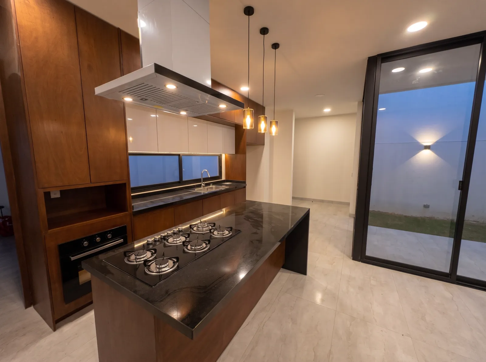
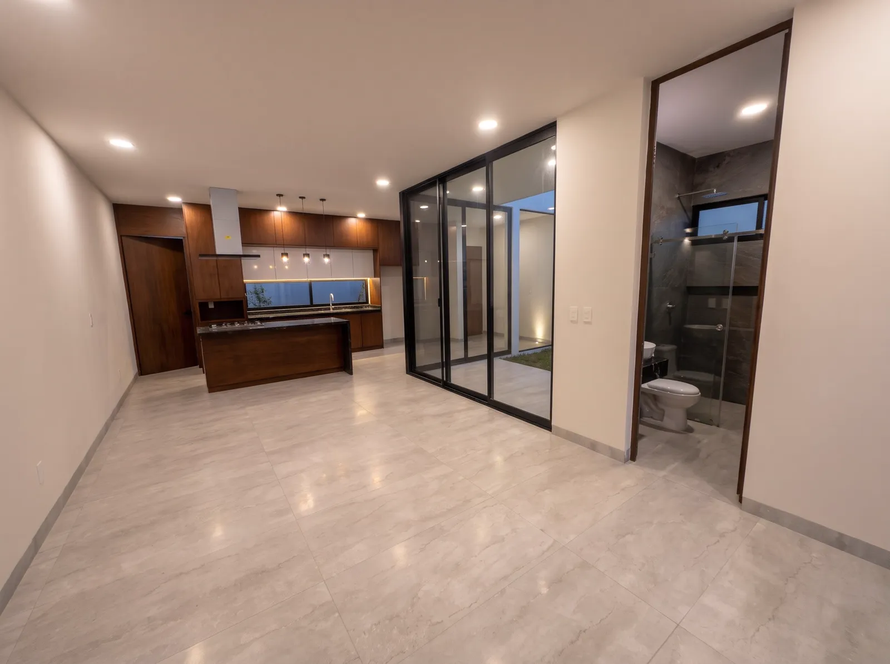
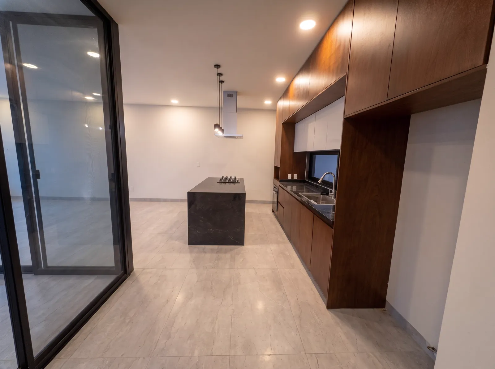
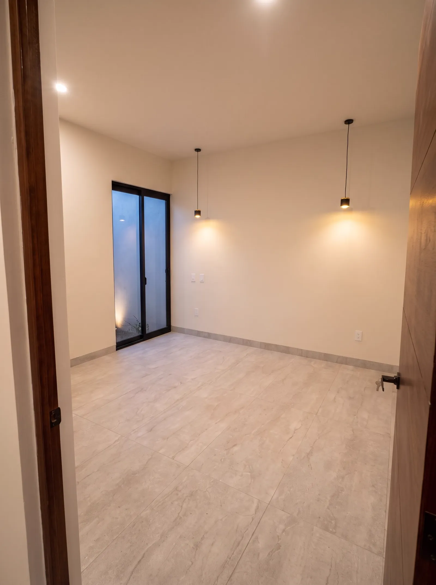
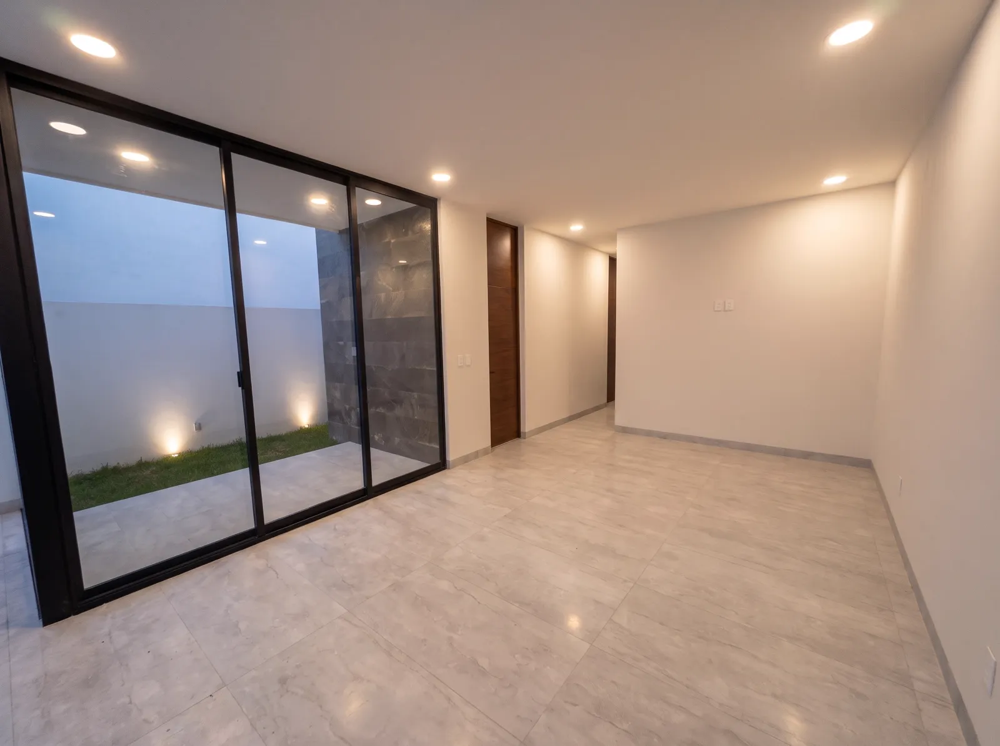
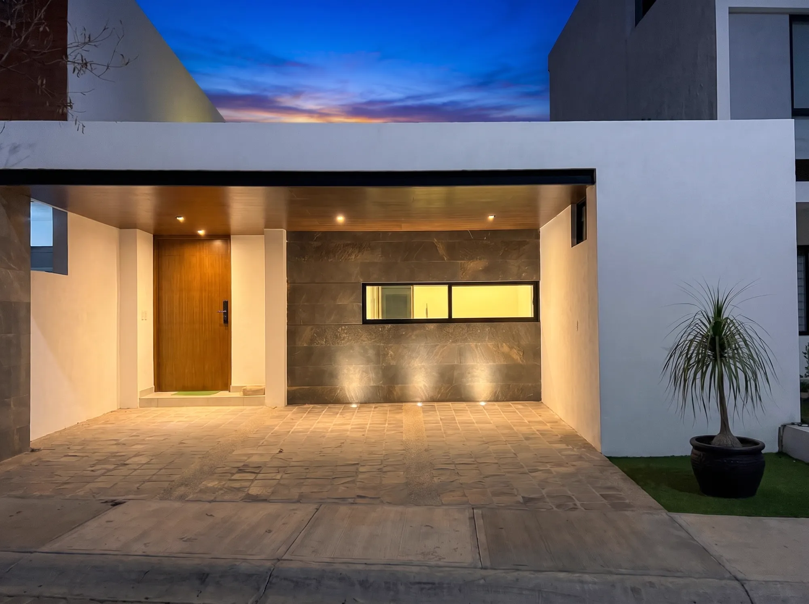

02Galería
Recorre la casa








Privada Punta Peñasco · Lomas Punta del Este · León, Gto.
Residencia de estreno en privada: 2 recámaras y estudio, cocina con isla de granito, carpintería de nogal y jardín interior. Lista para habitarse.
Obra nueva en la Privada Punta Peñasco, dentro de Lomas Punta del Este. La casa se desarrolla en un solo nivel: recibidor, sala y comedor abiertos a la cocina-desayunador con isla de granito, estudio independiente y dos recámaras — la principal con vestidor y baño completo.
La carpintería de nogal recorre toda la casa, los pisos son de porcelanato formato grande y el jardín interior mete luz natural a las áreas comunes. Terraza, cuarto de lavado y cochera techada para dos autos completan el programa.





Dentro de la Privada Punta Peñasco, en Lomas Punta del Este: una zona consolidada y tranquila al oriente de León.
Parrilla, campana y horno de gas, con isla y cubiertas de granito, alacena y carpintería de nogal.
Cisterna con bomba sumergible y tanque hidroneumático: presión constante en los 3 baños, todo el año.
Agua de SAPAL, electricidad CFE y boiler eléctrico. Casa nueva: estrenas sin pendientes ni remodelaciones.
Sin escaleras: ideal para vivir cómodo hoy y para el largo plazo. 148.10 m² construidos bien distribuidos.
Luz natural todo el día, muro de piedra y pasto: un respiro privado al centro de la casa.
Privada Punta Peñasco, Punta Peñasco #154. Zona residencial en crecimiento al oriente de León, con acceso rápido a los corredores comerciales y vialidades principales de la ciudad.
Abrir en Google MapsAgenda tu visita y conócela en persona.
Respuesta directa, sin intermediarios.
WhatsApp · 477 406 4268